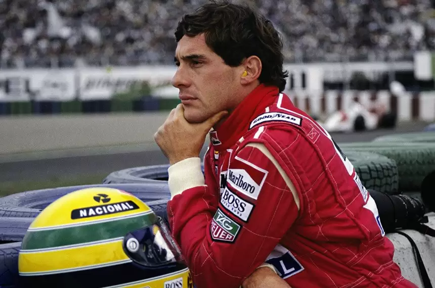

Ayrton Senna, dedicação ao extremo!
Ayrton Senna da Silva foi um piloto brasileiro de Fórmula 1, campeão da categoria três vezes, em 1988, 1990 e 1991. Ele começou sua carreira competindo no kart em 1973 e em "carros de fórmula" em 1981, quando venceu as Fórmulas Ford 1600 e 2000